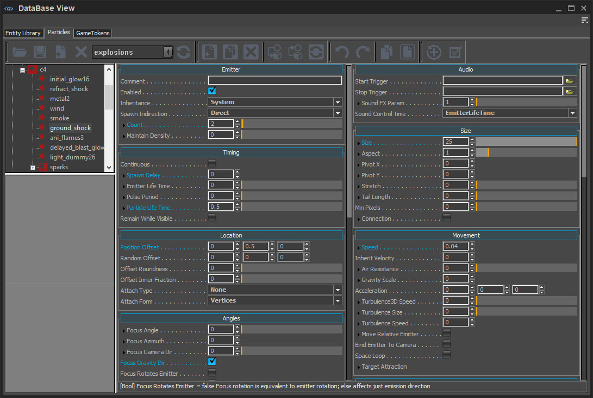
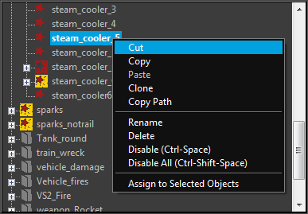
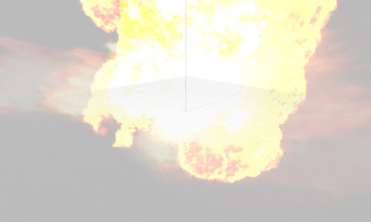
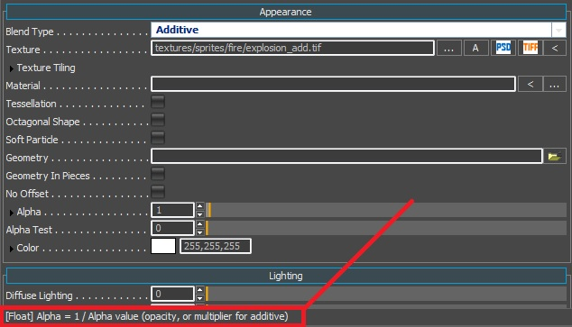

Particles tab on DataBase View is no longer supported in CRYENGINE. It will be removed from the engine in the future and some features might not function as expected. For more information about the new Particle Editor tool, please refer to the Particle Editor page.
Overview
The Particle Editor can be found in the Database View → Particles tab. It can be used not only to create particle effects and tweak their parameters, but also to manage and store them.
A particle effect can be used by either being dragged and dropped into the perspective view or by being assigned to a selected particle entity. This entity determines the basic location, angle, scale, and or link information with other entities.
For more information on particle parameters that are available in the Particle Editor, see Particle Editor Params. For advanced techniques, please see Particle Editor Advanced Techniques.

Toolbar
Function | Description |
|---|---|
Load Library | Opens the browser and displays the available particle libraries. |
Save Modified Libraries | Saves the Libraries to the disk. This button saves the whole libraries, not only the current one, to the memory if there has been any changes. |
Add Library | Adds a new library. The new library remains open until the editor is closed. To keep the library, click the Save Modified Libraries option before closing the editor. |
Remove Library | Removes the current library. This option doesn't remove the library file from the disc, it only removes current library from on-memory library list. To undo a step on the current library without restarting the editor, simply close and open it again. |
Library Selector | Selects the current library from on-memory library list. |
Reload Library | Reloads the current library. To undo a step on the current library without restarting the editor, simply close and open it again. |
Function | Description |
|---|---|
Add New Item | Adds a new effect. By default, this option adds a child of the selected effect or group. |
Clone Library Item | Clones the current item and all of the sub items to a new effect. |
Remove Item | Removes the current item. It doesn't change the library file on disc; it only removes the item from on-memory current library. |
Assign Item to Selected Objects | Assigns the current item to the selected items on the scene. Only works when a top node of the each item in the Item View is selected. |
Get Material From Selection | Gets the material from the selected item on the scene, and makes it the current material on the particle editor. Only works when the selected item has a particle parameter. |
Reload Item | Reloads the current library. To undo a step on the current library without restarting the editor, simply close and open it again. |
Function | Description |
|---|---|
Undo | Undoes the last change. |
Redo | Redoes the previously undone action. |
Copy | Copies all the settings of the currently selected entry to the clip board. |
Paste | Writes any entry data from the clip board to the current entry. |
Function | Description |
|---|---|
Reset Item To Default | Resets the selected item and its features to their default values. |
Enable/Disable All Sub Effects | Enables or Disables the selected item and all of its child effects. |
Editing Concepts
Base Parameters
Besides the input of the base value, most of the numeric parameters can be randomized and varied through extra values. They allow random variation and evolution over particle and/or emitter lifetime.
To access the variation controls, click on the expand (+) widget next to the value. When closed, this widget is colored if any variation values are non-default.
A variable parameter can have the following components:
Base value - This is also the maximum value the parameter can be (any variations only reduce this value).
Var Random - This is the maximum fractional amount that the Base value will randomly reduce by
Color Parameters
The Color parameter works a little differently.
Random Var - A percentage value that varies the Base Color, separately in each component.
Life Curves - Color curves that multiply the Base Color. Thus, they don't show the resultant color directly (unless the base color is white). They are edited with a color gradient control.
Adding a point - Double-click the bottom of the control.
Moving a point in time - Click a point and drag it around.
Editing a point's color - Double-click the existing point.
Changing a point's tangents - Right-click the point to toggle the tangents between continuous and non-continuous.
Deleting a point - Select the point and press Delete.
Child Effects
An effect can have any number of child effects, created and shown in the Item View as nested sub-effects. They can be nested to any level. There are two kinds of child effects:
Regular Child Effects - They behave just like separate effects, except they are spawned with and attached to their parent effect. Each child effect has its own independent lifetime, etc. This allows users to create an overall effect that consists of several parts.
Second-Generation Child Effects - They are the effects that are attached to the individual particles of the parent effect. That is, a separate emitter is spawned for each particle of the parent effect, and those emitters move with their parent particles. This allows users to create much more complex effects. Second-generation effects can be nested multiple times, creating 3rd-or-more generation effects. Be careful, however, since the number of particles created is equal to the product of the child effect Count and the parent effect Count.
Particle Effect Creation Workflow
Prepare a Library
Like many other elements in CRYENGINE, particle effect data is saved in a library file (xml.) The default folder is located in GameSDK\Libs\Particles.
All of the particles that are available in the game should be stored in this folder, organized into different types of particles, such as smoke_and_fire, explosions or vehicle_fx, etc.
The first thing you need to do is make a new library and save it in the folder above. After this, add the new Groups or Items into it.
Groups and Items
Every particle effects are belonging to Group. At first, you have to make new group to add new Item on your library.
Apply Texture/Materials and Edit Parameters
After applying the texture and/or materials to the new particle, users can start working on Particle Editor Params.
Implement into Game
The final step is to implement the particle effect into the game. Now, different steps can be taken, such as putting the emitter in the scene and linking it to an asset or giving it different functions via the Flow Graph or Track View.
A Material Effect can also be set up to define a custom impact effect or make a full screen effect through Flow Graph and implement it into the particle effect.
Item View
In the Item View, the particle effects can be access and organized.

Context Menu
Function | Description |
|---|---|
Cut | Removes the current item and all of its sub items, then copies it to the clip board. |
Copy | Copies the current item and all of its sub items to the clip board. |
Paste | Pastes items that have been copied previously to the selected item. |
Clone | Clones the current item and all of its sub items and implements them to a new effect, by default, as another child of the current parent item. |
Copy Path | Copies the path of the effect to the clipboard. |
Rename | Renames the current item. |
Delete | Deletes the current item and all of its sub items. |
Enable/Disable | Depending on current status, enables or disables the current item. |
Enable/Disable All | Depending on current status, enables or disables the current item and all of its sub items. |
Assign To Selected Objects | Assigns the current item to the selected items on the scene. Only works when selecting a top node of the each item in the Item View. |
Preview Window
Positioned at the bottom left corner of the Particle Editor window, this window displays a quick preview of particles; but it is advised not to try and edit particles in this window.

The Preview Window will position the camera automatically to capture the particle in its entirety. This means if the particle has a large bounding box, it will zoom the camera out far to fit it all on the screen. Use the Left Mouse button to pan the camera and the Mouse Wheel to control zoom levels.
Tool Tips
When hovering over the different parameters inside the Particle Editor, the tool tips at the bottom of the Particle Editor can be seen. If the Particle Editor spreads over two columns, these tips are displayed under the left column.
